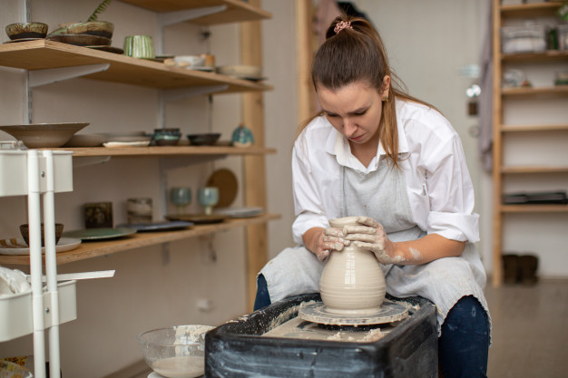
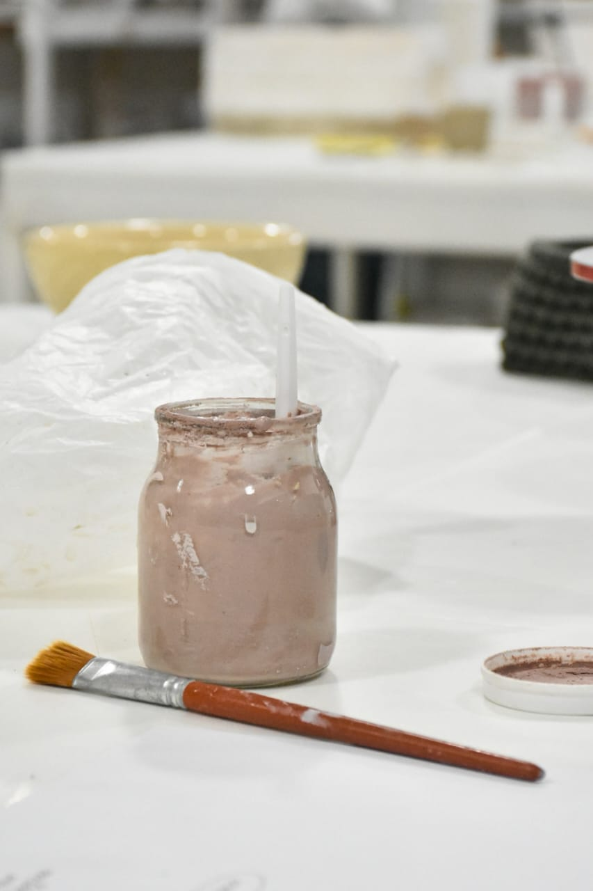

Nosotros
Soy una apasionada artesano dedicado a crear piezas únicas y hermosas. Con años de experiencia en el oficio, mi objetivo es compartir mi amor por la belleza y la artesanía a través de cada obra de arte hecha a mano. Bienvenidos a un ambiente cálido y acogedor donde podrás aprender y explorar tu propia creatividad. Únete a nosotros y descubre la magia de dar vida a la arcilla en nuestro taller de cerámica.
